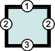
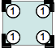

CSS
Created by Vladimir Zhydal
What?
- CSS is an acronym for Cascading Style Sheets.
- CSS is a style language that defines visual styles of HTML documents.
Why?
- Separation of presentation from markup.
- Cleaner code.
- Easier to manage style changes.
History
- 1994
- CSS was first proposed by Håkon Wium Lie.
- 1996
- CSS level 1 was published as a W3C Recommendation.
- 1998
- CSS level 2 was published as a W3C Recommendation.
- 2011
- CSS level 2.1 was published as a W3C Recommendation.
CSS3
- CSS 3 is divided into several separate documents called "modules".
- Each module adds functionality and/or replaces part of the CSS2.1 specification.
CSS4
(The Great Renaming)
There is no such thing as CSS4.
Syntax
Anatomy of CSS rule

Grouping declarations
p {
color: red;
}
p {
font-size: 12px;
}
p {
line-height: 15px;
}
p {
color: red;
font-size: 12px;
line-height: 15px;
}
Grouping Selectors
h1 {
color: red;
font-weight: bold;
}
h2 {
color: red;
font-weight: bold;
}
h3 {
color: red;
font-weight: bold;
}
h1, h2, h3 {
color: red;
font-weight: bold;
}
Comments
/* Comment here */
p {
margin: 1em; /* Comment here */
padding: 2em;
/* color: white; */
background-color: blue;
}
/*multi-line
comment here*/
Applying CSS
Three ways to attach
- Inline style
- Embedded
- Linked
Inline
Embedded
Linked
Selectors
Selectors
A CSS selector is the part of a CSS rule set that actually selects the content.
Simple Selectors
| Pattern | Meaning | Level |
|---|---|---|
| * | any element | 2 |
| E | an element of type E | 1 |
| E.warning | an E element whose class is "warning" | 1 |
| E#myid | an E element with ID equal to "myid" | 1 |
Class vs. Id
class
can be used several times
ID
can only be used once
Use CSS classes where it’s possible, to make your styles reusable on the page.
Attribute Selectors
| Pattern | Meaning | Level |
|---|---|---|
| E[foo] | an E element with a "foo" attribute | 2 |
| E[foo="bar"] | an E element whose "foo" attribute value is exactly equal to "bar" | 2 |
| E[foo~="bar"] | an E element whose "foo" attribute value is a list of whitespace-separated values, one of which is exactly equal to "bar" | 2 |
| E[foo|="en"] | an E element whose "foo" attribute has a hyphen-separated list of values beginning (from the left) with "en" | 2 |
Attribute Selectors
| Pattern | Meaning | Level |
|---|---|---|
| E[foo^="bar"] | an E element whose "foo" attribute value begins exactly with the string "bar" | 3 |
| E[foo$="bar"] | an E element whose "foo" attribute value ends exactly with the string "bar" | 3 |
| E[foo*="bar"] | an E element whose "foo" attribute value contains the substring "bar" | 3 |
Pseudo Classes
| Pattern | Meaning | Level |
|---|---|---|
| E:link E:visited |
an E element being the source anchor of a hyperlink of which the target is not yet visited (:link) or already visited (:visited) | 1 |
| E:active E:hover E:focus |
an E element during certain user actions | 1 and 2 |
| E:target | an E element being the target of the referring URI | 3 |
Pseudo Classes
| Pattern | Meaning | Level |
|---|---|---|
| E:lang(fr) | an element of type E in language "fr" (the document language specifies how language is determined) | 2 |
| E:enabled E:disabled |
a user interface element E which is enabled or disabled | 3 |
| E:checked | a user interface element E which is checked (for instance a radio-button or checkbox) | 3 |
| E:not(s) | an E element that does not match simple selector s | 3 |
Pseudo Classes
(Structural)
| Pattern | Meaning | Level |
|---|---|---|
| E:root | an E element, root of the document | 3 |
| E:nth-child(n) | an E element, the n-th child of its parent | 3 |
| E:nth-last-child(n) | an E element, the n-th child of its parent, counting from the last one | 3 |
| E:nth-of-type(n) | an E element, the n-th sibling of its type | 3 |
Pseudo Classes
(Structural)
| Pattern | Meaning | Level |
|---|---|---|
| E:nth-last-of-type(n) | an E element, the n-th sibling of its type, counting from the last one | 3 |
| E:first-child | an E element, first child of its parent | 2 |
| E:last-child | an E element, last child of its parent | 3 |
| E:first-of-type | an E element, first sibling of its type | 3 |
Pseudo Classes
(Structural)
| Pattern | Meaning | Level |
|---|---|---|
| E:last-of-type | an E element, last sibling of its type | 3 |
| E:only-child | an E element, only child of its parent | 3 |
| E:only-of-type | an E element, only sibling of its type | 3 |
| E:empty | an E element that has no children (including text nodes) | 3 |
Pseudo Elements
| Pattern | Meaning | Level |
|---|---|---|
| E::first-line | the first formatted line of an E element | 1 |
| E::first-letter | the first formatted letter of an E element | 1 |
| E::before | generated content before an E element | 2 |
| E::after | generated content after an E element | 2 |
Combinators
| Pattern | Meaning | Level |
|---|---|---|
| E F | an F element descendant of an E element | 1 |
| E > F | an F element child of an E element | 2 |
| E + F | an F element immediately preceded by an E element | 2 |
| E ~ F | an F element preceded by an E element | 3 |
The key selector
The key selector is the right-most part of a larger CSS selector. This is what the user agent looks for first.
Selector Matching
Value Processing
Value Processing
A user agent must assign a value to every property that applies to the target media type to every box in the formatting structure.
Calculation
- Collecting all the declared values applied to an element.
- Cascading yields the cascaded value.
- Defaulting yields the specified value.
- Resolving value dependencies yields the computed value.
- Formatting the document yields the used value.
- Transforming to the actual value based on constraints of the display environment.
calculation examples
| Property | Winning declaration | Cascaded value | Specified value | Computed value | Used value | Actual value |
|---|---|---|---|---|---|---|
| font-size | font-size: 1.2em | 1.2em | 1.2em | 14.1px | 14.1px | 14px |
| width | width: 80% | 80% | 80% | 80% | 354.2px | 354px |
| width | width: auto | auto | auto | auto | 134px | 134px |
| height | height: auto | auto | auto | auto | 176px | 176px |
| page-break-after | (none) | (none) | auto (initial value) | auto | auto | auto |
Filtering
Filtering
In order to find the declared values, user agents must first identify all declarations that apply to each element.
Filtering
-
A declaration applies to an element if:
- It belongs to a style sheet that currently applies to this document.
- It is not qualified by a conditional rule with a false condition.
- It belongs to a style rule whose selector matches the element.
- It is syntactically valid: the declaration’s property is a known property name, and the declaration’s value matches the syntax for that property.
Cascading
Cascading
The cascade takes a unordered list of declared values for a given property on a given element, sorts them by their declaration’s precedence, and outputs a single cascaded value.
Cascading origins
- Author
- User
- User agent
User agent Style Sheet
User agent applies style sheets to all web documents. These are referred to as a “default” user agent style sheet.
User Style Sheets
Most user agents allow user to apply their own style sheets within the user agent.

Author Styles Sheets
Web authors can apply one or more style sheets to an HTML document.
Cascading order
Which CSS rules “win”?
There are four steps to determine which CSS rules will “win”.
Step 1
Gather all the declarations that apply to an element and property from browser, author and user style sheets.

Step 2
Sort the gathered declarations according to:
- origin
- user agent
- author
- user
- importance
- normal
- !important
- origin
From lowest to highest priority
- Normal declarations in user agent style sheet.
- Normal declarations in user style sheet.
- Normal declarations in author style sheet.
- !important declarations in author style sheet.
- !important declaration in user style sheet.
- !important declaration in user agent style sheet.
Step 3
If declarations have the same origin or importance then the declaration’s selectors need to be scored, to see which declaration will “win”.
Selectors Specificity
- Inline style.
- Count the number of IDs.
- Count the number of classes, attributes and pseudo-classes.
- Count the number of element names or pseudo-elements.
A note on concatenation
“A” will always beat “B”, which will always beat “C”, which will always beat “D”.
Step 4
If two declarations have the same importance, origin and specify, the later specified declaration wins.
Defaulting
Defaulting
-
When the cascade does not result in a value, the specified value must be found some other way:
- Inherited properties draw their defaults from their parent element through inheritance.
- Other properties take their initial value.
Inheritance
Inheritance propagates property values from parent elements to their children.
Explicit Defaulting
- Resetting a Property: the initial keyword.
- Explicit Inheritance: the inherit keyword.
- Erasing All Declarations: the unset keyword.
Box Model
Box Model
The CSS box model describes the rectangular boxes that are generated for elements in the document tree and laid out according to the visual formatting model.
Box Dimensions

Box Edges
- content edge or inner edge
- padding edge
- border edge
- margin edge or outer edge
box-sizing
- content-box
- padding-box
- border-box
Collapsing Margins
-
In CSS, the adjoining margins of two or more boxes can combine to form a single margin.
-
Margins that combine this way are said to collapse, and the resulting combined margin is called a collapsed margin.
Vertical margins collapse
(basic cases)
- Adjacent siblings.
- Parent and first/last child.
- Empty blocks.
Horizontal margins collapse
Do not collapse in most cases...
Collapsing restrictions
- Only margins of block-level boxes can collapse.
- Margins of a floated box do not collapse with any other margins.
- Margins of a box with ‘overflow’ other than ‘visible’ do not collapse with its children's margins.
- Margins of an absolutely positioned box do not collapse with any other margins.
- Margins of the root element's box do not collapse.
Visual formatting model
Visual formatting model
The CSS visual formatting model is the algorithm used to process a document and display it on a visual media.
Defining boxes
- box dimensions
- box type
- the positioning scheme
- the other elements in the tree
- the viewport size and position
- intrinsic dimensions of contained images
- other external information
Box Generation
- The part of the CSS visual formatting model.
- Creates boxes from the document's elements.
Box Types
- Affect how the visual formatting is done.
- Depend of the value of the display CSS property.
Block-level elements and block boxes
- Visually formatted as a block.
- Intended to be vertically stacked.
- display: block, list-item, table.
Block-level elements
- Participates in a block formatting context.
- Generates at least one block-level box (principal block-level box).
Block container box
Is a box that contains only other block-level boxes, or creates an inline formatting context.
A block-level box may also be a block container box.
block-level box
vs.
block container
block-level box
how the box will behave with its parents and sibling
block container
how the box will interact with its descendants
Block Boxes

Block-level boxes that also are block container boxes are called block boxes.
Anonymous block boxes
-
Supplementary boxes.
-
Cannot be styled using CSS selectors.
-
Use the inherit value or the initial value of css properties.
Anonymous block boxes
Some inline text followed by a paragraph
followed by more inline text.
Inline-level elements and inline boxes
Distributed in lines with other inline-level content.
display: inline, inline-block, inline-table.
Inline-level elements
Generate inline-level boxes.
inline boxes
Inline boxes are both inline-level boxes and boxes that participate in their container's inline formatting context.
Inline Boxes
Dimensions Calculation
- width
- doesn't apply.
- height
- doesn't apply, but the height of the box is given by the ‘line-height’ property.
- padding
- only left and right padding will have an effect.
- margin
- only left and right margin will have an effect.
atomic inline-level boxes
Inline-level boxes that do not participate in an inline formatting context.
Are never split in several boxes.
Generated by: replaced inline-level elements, by elements with a calculated display value (inline-block or inline-table).
atomic inline-level boxes
The text in the span can be split
in several lines as it is an inline box.
The text in the span cannot be split
in several lines as it is an inline-block box.
Anonymous inline boxes
Any text that is directly contained inside a block container element (not inside an inline element).
Use the inherit value or the initial value of css properties.
Anonymous inline boxes
Some emphasized text
Other types of boxes
- Line boxes.
- Run-in boxes.
- Model-induced boxes.
Positioning schemes
- Normal flow.
- Floats.
- Absolute positioning.
normal flow
Boxes are laid out one after the other
(vertically or horizontally).
normal flow
- position
- static
- relative
- float
- none
normal flow
static positioning
The boxes are drawn at the exact position defined by the normal flow layout.
relative positioning
The boxes are drawn with an offset defined by the top, bottom, left and right CSS properties.
Floats
Floating boxes are positioned at the beginning or end of the current line.
Anything within the normal flow flows along the edge of the floating boxes.
Floats
- position
- static
- relative
- float
- left
- right
The clear CSS property
-
Specifies whether an element can be next to floating elements that precede it or must be moved down (cleared) below them.
-
Applies to both floating and non-floating elements.
Block formatting context
- The region in which:
- the layout of block boxes occurs;
- floats interact with each other.
Block formatting context
- Created by:
- the root element;
- floats;
- absolutely positioned elements;
- inline-blocks;
- table cells and table captions;
- elements where overflow has a value other than visible;
- flex boxes.
Absolute positioning
- Boxes are entirely removed from the flow.
- Boxes don't interact with the flow at all.
- Boxes positioned relative to their containing block.
Containing Block
Element boxes are positioned within a formatting context, which, by default, is provided by the box generated by a parent element.
containing block
position: static or relative
- The containing block is formed by the edge of the content box of
the nearest ancestor element whose display property value is one of:
- block
- inline-block
- list-item
- run-in
- table
- table-cell
containing block
position: absolute
- The containing block is the nearest positioned ancestor (the nearest ancestor whose position property has one of the values absolute, fixed, or relative).
- The containing block is formed by the padding edge of that ancestor.
containing block
position: fixed
- The containing block is the viewport (for continuous media) or the page box (for paged media).
The stacking context
- Boxes are positioned in three dimensions.
- The third dimension is the z axis, which is perpendicular to the screen.
'z-index' property
For a positioned box, the 'z-index' property specifies:
- The stack level of the box in the current stacking context.
- Whether the box establishes a local stacking context.
Forming of a stacking context
- The root element (HTML).
- Positioned (absolutely or relatively) with a z-index value other than "auto".
- A flex item with a z-index value other than "auto".
- Elements with an opacity value less than 1.
- Elements with a transform value other than "none".
- Elements with a mix-blend-mode value other than "normal".
- Elements with a filter value other than "none".
- Elements with isolation set to "isolate".
Stacking context layers
- The background and borders of the element that establishes the stacking context.
- The stacking contexts of descendants with negative stack levels.
- Block-level descendants in the normal flow.
- Floated descendants and their contents.
- Inline-level descendants in the normal flow.
- Positioned descendants whose z-index is auto or 0.
- The stacking contexts of descendants with positive stack levels.
stacking context
(summary)
-
Positioning and a z-index value creates a stacking context.
-
Stacking contexts are hierarchical.
-
Each stacking context is completely independent from its siblings.
The Golden rule of z-index
“If you are using 3 digits z-index values, you are doing it wrong.”
CSS At-rules
CSS At-rules
At-rules are instructions or directives to the CSS parser.
CSS At-rules
- @charset
- @import
- @media
- @page
- @font-face
CSS Properties
CSS Properties
- Box Properties
- Layout Properties
- List Properties
- Table Properties
- Color and Backgrounds
- Typographical Properties
- Generated Content
- User Interface Properties
- Paged Media Properties
Box Properties
width (min/max), height (min/max), margin, padding, border, outline
Layout Properties
display, position, float, clear, visibility, top, right, bottom, left, z-index, overflow, clip
List Properties
list-style-type, list-style-position, list-style-image
Table Properties
table-layout, border-collapse, border-spacing, empty-cells, caption-side
Color and Background Properties
color, background-color, background-image, background-repeat, background-position, background-attachment
Typographical Properties
font-family, font-size, font-weight, font-style, font-variant, letter-spacing, word-spacing, line-height, text-align, text-decoration, text-indent, text-transform, text-shadow, vertical-align, white-space, direction
Generated Content Properties
content, counter-increment, counter-reset, quotes
User Interface Properties
cursor
font

font: [font-style||font-variant||font-weight] font-size [/line-height] font-family | inherit
Font
Font
background
CSS 2.1
- background-color
- background-image
- background-repeat
- background-attachment
- background-position
CSS 3
- extends existing properties
- adds new properties:
- background-origin
- background-clip
- background-size
- multiple-backgrounds
background
gradient
Displays smooth transitions between two or more specified colors.
transition
Allows you to change property values smoothly over a given duration.
animation
Allows animation of most HTML elements without using JavaScript or Flash
transform
- translate
- scale
- rotate
- skew
- perspective
- matrix
box-shadow
box-shadow: none|h-shadow v-shadow blur spread color |inset|initial|inherit;text-shadow
.neon {
text-shadow:
0 0 10px #fff, 0 0 20px #fff,
0 0 30px #fff, 0 0 40px #ff00de,
0 0 70px #ff00de, 0 0 80px #ff00de,
0 0 100px #ff00de, 0 0 150px #ff00de;
}
.fire {
text-shadow:
0 0 20px #fefcc9, 10px -10px 30px #feec85,
-20px -20px 40px #ffae34, 20px -40px 50px #ec760c,
-20px -60px 60px #cd4606, 0 -80px 70px #973716,
10px -90px 80px #451b0e;
}
Neon
Fire
border-radius
text-overflow
One line text
that should be cut
Vendor-specific Properties
'-' + vendor specific identifier + '-' + meaningful name
| Prefix | Organisation |
|---|---|
| -ms- | Microsoft |
| -moz- | Mozilla Foundation (Gecko-based browsers) |
| -o- | Opera Software |
| -webkit- | Safari (and other WebKit-based browsers) |
div {
-webkit-border-radius: 3px;
-moz-border-radius: 3px;
border-radius: 3px;
}
Shorthand Properties
CSS properties that let you set the values of several other CSS properties simultaneously.
Shorthand Properties
(Edge Cases)
A value which is not specified is set to its initial value. (it overrides previously set values).
div {
background-color: red;
background: url(images/bg.gif) no-repeat top right;
}
Shorthand Properties
(Edge Cases)
Only the individual properties values can inherit.
The keyword inherit can be applied to a property, but only as a whole, not as a keyword for one value or another.
.parent {
background: red;
}
.child {
background: inherit;
}
Shorthand Properties
(Edge Cases)
Shorthand properties try not to force a specific order for the values of the properties they replace.
font: [font-style||font-variant||font-weight] font-size [/line-height] font-family | inherit
div {
font: italic bold 12pt/10pt serif
}
Shorthand Properties
(Properties related to edges of a box)
 |
|
 |
|
|  |
|
 |
|
Shorthand Properties
(Properties related to corners of a box)
|  |
|
 |
|
 |
|
 |
|
CSS Units
Units
| Unit | Description |
|---|---|
| % | percentage |
| em | 1em is equal to the current font size. 2em means 2 times the size of the current font. |
| ex | one ex is the x-height of a font (x-height is usually about half the font-size) |
| px | pixels (a dot on the computer screen) |
Units
| Unit | Description |
|---|---|
| pt | point (1 pt is the same as 1/72 inch) |
| pc | pica (1 pc is the same as 12 points) |
| in | inch |
| cm | centimeter |
| mm | millimeter |
Units recommendations
| Recommended | Occasional use | Not recommended | |
|---|---|---|---|
| Screen | em, px, % | ex | pt, cm, mm, in, pc |
| em, cm, mm, in, pt, pc, % | px, ex |
More Units in CSS
| Unit | Description |
|---|---|
| rem | is the font size of the root element of the document |
| vw | 1/100th of the window's width |
| vh | 1/100th of the window's height |